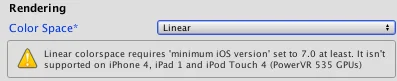

The Unity Editor allows you to work with traditional gamma color space as well as linear color space. You can work in linear colour space even if your TexturesAn image used when rendering a GameObject, Sprite, or UI element. Textures are often applied to the surface of a mesh to give it visual detail. More info
See in Glossary are in gamma color space.
Note: If your Textures are in linear color space, you need to disable sRGB sampling. See documentation on Linear Textures for more information.
Linear rendering gives a different look to the rendered Scene. When you have authored a project to look good when rendering in gamma space, it is unlikely to look great when you change to linear rendering. Because of this, if you move to linear rendering from gamma rendering it may take some time to tweak the project so that it looks as good as before. However, the switch ultimately enables more consistent and realistic rendering and so may be worth the time spent on it. You are likely to have to tweak Textures, Materials and Lights.
The lighting calculations in the lightmapper are always done in linear space (see Color space for more information). The lightmaps are always stored in gamma space. This means that the lightmap textures are identical no matter whether you’re in gamma or linear color space.
When you are in linear color space, the texture sample gets converted from gamma to linear space when sampling the texture. When you’re in gamma color space, no conversion is needed. Therefore, when you change the color space setting, you must rebake lightmaps: This happens automatically when Unity’s lighting is set to auto bake (which is the default).
The data in lightmap EXR files created by Unity is in linear space. It gets converted to gamma space during import. When bringing in lightmaps from an external lightmapper, mark the lightmaps as Texture Type: Lightmap in the Texture Importer. This setting makes sure sRGB sampling is bypassed on import.
Linear rendering is not supported on all platforms. The build targets that support the feature are:
There is no fallback to gamma when linear rendering is not supported by the device. In this situation, the Player quits. You can check the active color space from a script by looking at QualitySettings.activeColorSpace.
On Android, linear rendering requires at least OpenGL ES 3.0 graphics API and Android 4.3.
On iOS, linear rendering requires the Metal graphics API.
On Web, linear rendering requires at least WebGL 2.0 graphics API.
Until the minimum requirements are satisfied, the Editor prevents you from building a Player and shows a notification. This is to avoid games that would render incorrectly on user devices being deployed to digital stores.

When using HDR, rendering is performed in linear space into floating point buffers. These buffers have enough precision not to require conversion to and from gamma space whenever the buffer is accessed. This means that when rendering in linear mode, the framebuffers you use store the colors in linear space. Therefore, all blending and post process effects are implicitly performed in linear space. When the final backbuffer is written to, gamma correction is applied.
When linear color space is enabled and HDR is not enabled, a special framebuffer type is used that supports sRGB read and sRGB write (convert from gamma to linear when reading, convert from linear to gamma when writing). When this framebuffer is used for blending or it is bound as a Texture, the values are converted to linear space before being used. When these buffers are written to, the value that is being written is converted from linear space to gamma space. If you are rendering in linear mode and non-HDR mode, all post-process effects have their source and target buffers created with sRGB read and write enabled so that post-processing and post-process blending occur in linear space.